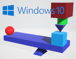
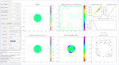
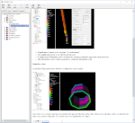
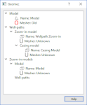

 |
Many stability issues on windows 10 have been resolved, including cross section crashes. | |
 |
The Inversion Tool has been upgraded to version 2. | |
 |
Help has been added on how to activate casing steel visualization. | |
 |
Easy conversion of meshes across the main and child models. Now also available: import of Earth models. | |